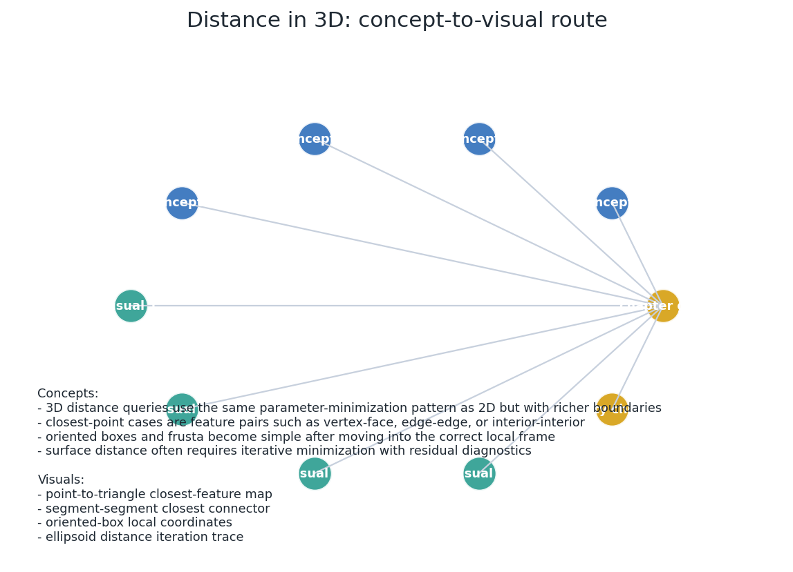
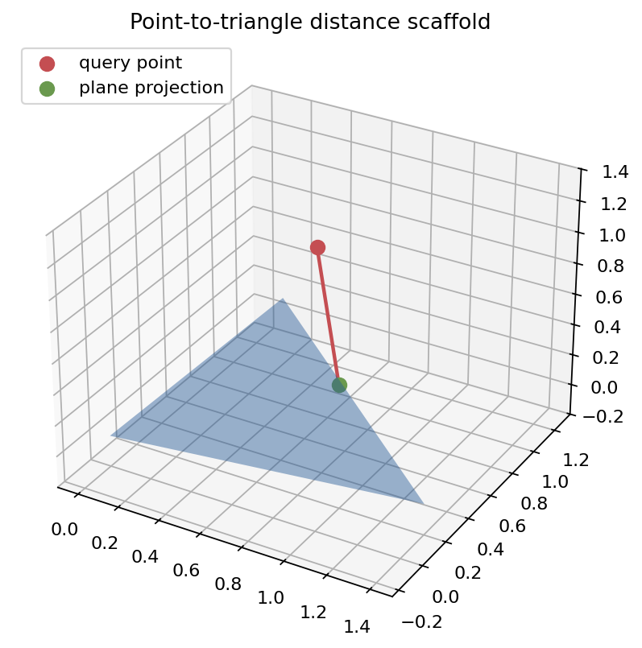
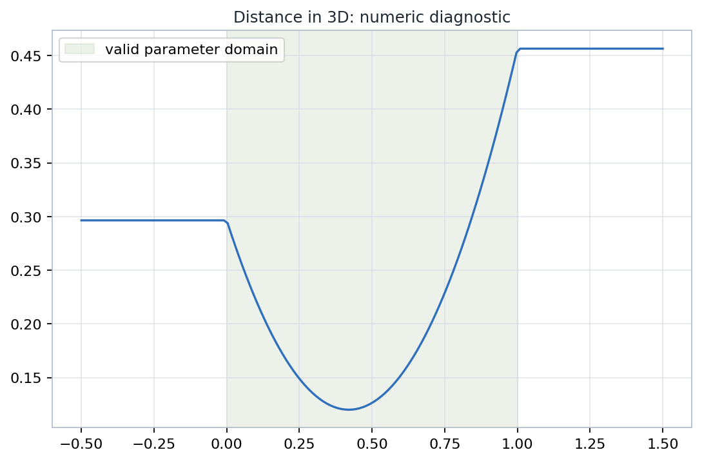
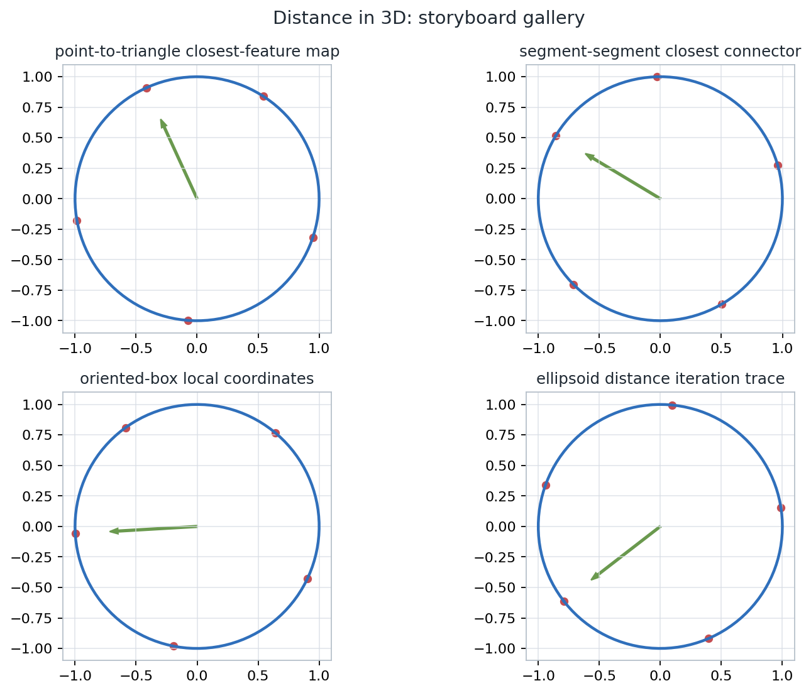

A distance routine is an optimization query with geometric obligations: closest points, active features, parameter locations, frame conventions, and diagnostics that survive degenerate cases.
Organize point, line, ray, segment, triangle, rectangle, box, polyhedron, quadric, curve, surface, and geodesic distances as repeatable computational patterns.
Four checked visuals drive the lecture: point-to-triangle feature classification, segment-segment closest connector, oriented-box local coordinates, and ellipsoid iteration residuals.
Notebook: Geometric-Tools-for-Computer-Graphics/part-03-3d-geometric-tools/chapter-10-distance-in-3d/10-distance-in-3d.ipynb
| Primitive Family | Core Reduction | State To Return |
|---|---|---|
| Point to line, ray, segment, polyline | Projection, then clamp to domain | Parameter and endpoint status |
| Point to plane, triangle, rectangle, polygon | Signed projection plus boundary fallback | Barycentric or edge feature |
| Point to polyhedron, OBB, frustum | Containment, local frame, face candidates | Inside flag and closest boundary feature |
| Quadrics, curves, polynomial surfaces | Stationarity equations and numerical solves | Residual, iteration count, boundary comparison |
| Convex bodies and geodesics | Support mappings or intrinsic surface paths | Certificate simplex or path length |
Do not memorize every case separately. Ask which domain is being minimized over, which constraints are active, and whether the result is an ambient distance or a surface-constrained distance.

\( \min_{u \in U,\; v \in V} \|X(u)-Y(v)\|^2 \)
Use the squared norm for stable comparison; take a square root only when a metric value is required for reporting.
\( t_0 = \dfrac{(P-A)\cdot (B-A)}{\|B-A\|^2} \)
If \(0 < t < 1\), the connector must be perpendicular to the segment direction. If \(t\) is clamped, endpoint status is the feature label.
\( P_{\Pi}=P-((P-A)\cdot n)n \)
Projection gives a candidate. Barycentric coordinates decide whether that candidate lies in the triangle or belongs to a boundary subproblem.
Notebook check: barycentric coordinates classify triangle features, and the connector from the query point to the active feature is normal only for unconstrained plane projection.

The plotted query point projects onto the triangle plane. The returned feature is the projected point if it is inside; otherwise the algorithm falls back to edge or vertex distance.
\( \min_{0\leq s,t\leq 1}\|A+sU-B-tV\|^2 \)
When \(s\) and \(t\) are both interior, the connector is perpendicular to both \(U\) and \(V\). This is the geometric test behind the unconstrained linear solve.
Parallel or nearly parallel directions make the unconstrained solve ill-conditioned. Robust implementations compare boundary candidates and record the tolerance branch used.
Many 3D distances are solved by checking a small set of candidate features, then reusing point-component or segment-component distances on those candidates.
| Target | Candidate Features | Useful Return Data |
|---|---|---|
| Triangle or rectangle | interior face, edges, vertices | barycentric or local coordinates |
| Tetrahedron | inside test, four triangular faces | face index and boundary feature |
| Oriented box | local coordinate clamp, faces and corners | local coordinate and world point |
| Line or ray to bounded object | interior intersection, then boundary features | parameter interval and active boundary |
\(p'=( (P-C)\cdot u,\; (P-C)\cdot v,\; (P-C)\cdot w )\)
For each component, clamp \(p'_i\) to the interval \([-e_i,e_i]\). The local closest point \(q'\) is then mapped back by \(Q=C+q'_1u+q'_2v+q'_3w\).
The squared distance \(\|P-Q\|^2\) must match \(\|p'-q'\|^2\). If it does not, the frame is not orthonormal or a transform convention is wrong.
If the point is inside the solid, the distance to the solid is zero. Only outside points need boundary feature evaluation.
Signed face tests identify whether the point lies inside all supporting halfspaces. Outside faces give a small candidate set; each candidate becomes a point-to-planar-component query.
Choose a coordinate system where the planes or scale factors are simple, then reuse the same inside/outside and boundary candidate logic.
For \(F(X)=0\), a smooth unconstrained closest point satisfies \(P-X=\lambda\nabla F(X)\).
Substituting the normal condition turns geometry into algebra. Depending on representation, the solver may face a high-degree polynomial or a constrained numerical root.
Scale to a convenient frame, solve for the multiplier, then report both the point and the residual that verifies the normal condition.
\( \frac{d}{dt}\|C(t)-P\|^2 = 2(C(t)-P)\cdot C'(t)=0 \)
\( (S(u,v)-P)\cdot S_u=0,\quad (S(u,v)-P)\cdot S_v=0 \)
Stationary points inside the parameter domain must be compared with boundary curves, corners, and any constrained intervals. A low residual is not enough if the domain was wrong.

The diagnostic curve makes the valid parameter domain and boundary comparisons explicit before reporting a minimum.
\( \operatorname{dist}(A,B)=\operatorname{dist}(0,A-B) \)
The final simplex and closest point to the origin explain the distance or certify intersection when the origin is enclosed.
Euclidean distance uses the straight chord in \(\mathbb{R}^3\). Geodesic distance restricts the path to the surface and minimizes path length there.
A point can be close through space but far along the surface when holes, folds, ridges, or constraints block the intrinsic path.
Choose one primitive, one tolerance, and one coordinate frame. Perturb a nearly degenerate case, render the active features, and record which changes are geometric rather than representation artifacts.

The notebook artifacts are a review surface: each picture is paired with an invariant that can fail in production code.